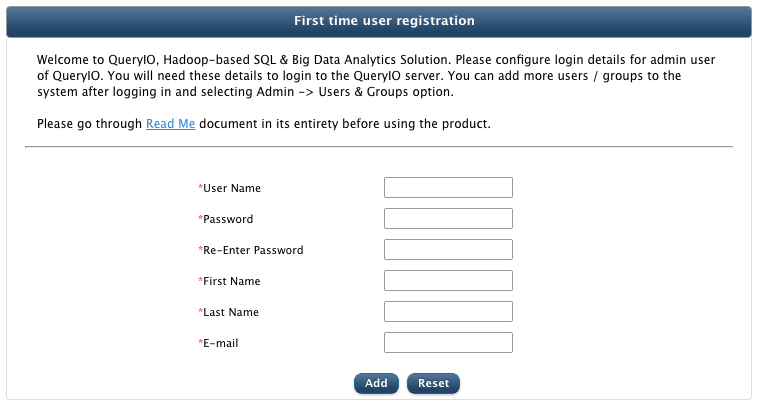

First time user registration
After QueryIO has been installed successfully and QueryIO server has started, a "First time user registration" page will be displayed (only if you did not setup a cluster using Automatic Hadoop Cluster Setup). You need to register an admin user to the QueryIO server, first time you visit QueryIO UI.
Following details are required for user registration:
- User Name: Login ID for the user.
- Password for login.
- Re-Enter Password Enter same password as above.
- First Name of user.
- Last Name of user.
- E-mail address of the admin user.
- Fill the details and click Add to add first user.

Now login to the QueryIO server using above provided username and password.
Copyright © 2015 QueryIO Corporation. All Rights Reserved.
QueryIO, "Big Data Intelligence" and the QueryIO Logo are trademarks
of QueryIO Corporation. Apache, Hadoop and HDFS are trademarks of The Apache Software Foundation.